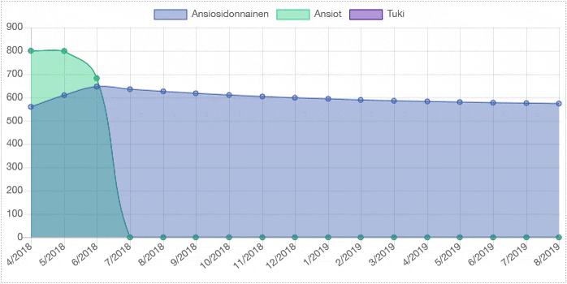
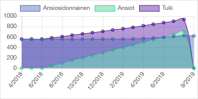
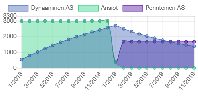
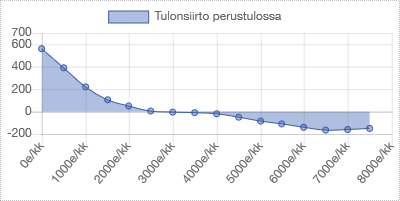
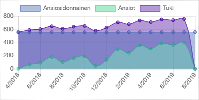

Dynaaminen Ansiosidonnainen
Uusi parempi ratkaisu sosiaaliturvaan

Joustava ratkaisu joustavaan työelämään
Nykyinen ansiosidonnaisen työttömyysturvan malli syntyi pitkien, säännöllisten työsuhteiden aikana turvaamaan aikaa työsuhteiden välissä. Malli karensseineen ja portaineen ja byrokratioineen tarkoittaa tämän päivän pätkittäisessä ja epäsäännöllisessä työelämässä ettei työnteko useinkaan kannata. Usein työttömän ei kannata tarttua lyhytaikaisiin tai osa-aikaisiin työllistymismahdollisuuksiin koska nettoansiot laskisivat tukien menettämisen ja karenssien takia. Tarvitaan uudenlainen ratkaisu jossa kaikenlainen työnteko kannattaa.
Dynaamisessa ansiosidonnaisessa ei ole portaita tai työssäoloehtoja vaan tuen taso kasvaa kun teet töitä ja maksat työttömyyseläkemaksuja ja pienenee kun nostat ansiosidonnaista. Työssäoloehdon ja maksimiajan sijaan taso nousee hiljalleen ansioiden tasolle ja laskee takaisin perusosaan ajan myötä. Osa-aikainen työskentely työttömyyden aikana pienentää ansiosidonnaista mutta jokainen tienattu euro kasvattaa nettoansioitasi. Voit myös nostaa vain osan tuesta jolloin taso kasvaa vähemmän.
Kokeile Itse!
Testaa miten dynaaminen ansiosidonnainen toimisi sinun tapauksessasi ja eri elämäntilanteissa säätämällä tulojasi ja paljonko nostat tukea.

Kaikki Työ Kannattaa
Keskeinen ongelma on purkaa kannustinloukut ja tehdä kaikesta työstä kannattavaa. Dynaaminen ansiosidonnaisen kanssa jokainen ansaittu lisäeuro sekä kasvattaa nettotuloja että pidentää ansiosidonnaisen kestoa. Teet töitä sitten tunnin tai päivän tai viikon, ei ylimääräistä byrokratiaa, karensseja tai tulorajoja vaan joka euro on kotiin päin.

Kustannusneutraali
Lähtökohtaisesti dynaaminen ansiosidonnainen voidaan tasapainottaa olemassaolevalle kustannustasolle säätämällä kuinka korkealle ja nopeasti ansiosidonnainen nousee ja kuinka nopeasti se laskee. Esim. nykymallisen täysipitkän ansiosidonnaisen tapauksessa voidaan korvaustason huippu nostaa 100% ansioista kustannusten nousematta.

Tulonsiirtoneutraali
Perustulomallien huono puoli on että ne kasvattavat nettosaajien joukkoa ja tämän tasapainoksi tarvitaan uusia veroja. Tästä seuraa että jossain tulohaarukan kohdassa nämä tasoittuvat eli kaikki tämän alapuolella saavat enemmän ja yläpuolella menettävät. Tämä loisi uuden tulonsiirron joka tekee toteuttamisesta poliittisen haasteen.

Rakenteellinen Työttömyys
Sosiaaliturvan suuria haasteita on rakenteellinen, pitkäaikainen työttömyys johtuen siitä ettei omalle ammattitaidolle enää löydy kysyntää. Etenkin vanhemmille työntekijöille on suuri haaste kouluttautua uudelle alalle tai muuttaa toiselle puolelle maata työn perässä. Järkevämpi päämäärä voisikin olla yrittää kasvattaa työllisyysastetta työttömistä 10%, 20%, jne. dynaamisen ansiosidonnaisen kaltaisilla kaikesta työskentelystä palkitsevilla ratkaisuilla.
Jatkokehityshaasteet
Dynaaminen ansiosidonnainen on tällä hetkellä konsepti joka tarvitsee tarkempaa analysointia, syntyykö uudenlaisia ongelmia tai käyttäjäryhmiä joille se ei sovi. Yleisesti kuinka nopeasti taso nousee ja laskee ansioiden ja tuen nostamisen seurauksena vaatii eri skenaarioiden mallintamista. Lisäksi mallin käyttäminen vaatisi että ansiosidonnainen ulotetaan kaikille esimerkiksi tekemästä kassajäsenyydestä pakollista tai tekemällä ansiosidonnaisesta perusvaihtoehto.